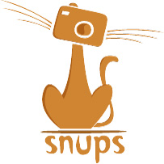

Master's Thesis: Evaluation of Counterpropagation Artificial Neural Networks for Android Malware Detection
Smartphone and tablet sales continuously increased in recent years. Android has by far the largest market share in this segment. More than 1 billion Android-based smartphones and tablets are estimated to be shipped in 2017. As a result of this great success, the Android platform is a lucrative target for developers of malicious software. The mobile operating system as well as the Google Play Store, from which applications usually are obtained, have precautions to counter malicious software. It turns out, however, that this countermeasures can be overcome and it is important to constantly promote research in this area. In this work, the suitability of Self-Organizing Maps (SOM) respectively Counterpropagation Artificial Neural Networks (CP-ANN) to identify malicious software among Android applications is evaluated. In the theoretical part of this thesis the Android platform and existing precautions, static and dynamic analysis of Android applications to generate feature vectors as well as self-organizing maps are elaborated. In the practical part, the author proposes a framework called AndroSOM which was developed in the course of this master’s thesis. It uses static and dynamic code analysis to build strong feature vectors describing Android applications. These are afterwards analyzes using SOM respectively CP-ANN to distinguish legitimate from malicious applications. Finally the results are discussed and an outlook on further developments is given. In the course of this work it was shown that CP-ANN are well suited for the identification of Android malware.
Tags: Android, Malware, Application, Market, Static Code Analysis, Machine Learning, Classification, Self-Organizing Maps, Counterpropagation Artificial Neural Networks
Download: Master's Thesis (German)
The following are some projects I've done at the University of Applied Science in Salzburg.
MovLib, the free movie library
MovLib is a free and open-source online movie database which can be edited by anybody. There is no serious free (in the sense of Creative Commons), international database with structured data about movies and series. The aim is not only to develop a movie database, but to also provide the user generated movie data via an API (OpenData) and provide a basis for other projects in this area. Check out our Github Repository!
Tags: Free Movie Database, Creative Commons, OpenData, PHP, OpenSource
Wissen • Teilen • Können
Wissen • Teilen • Können is a web-platform that enables people to find others in their field of interest, and as a next step, meet each other in real life to help exchange, learn and develop certain skills together.
Together with my team I won the European Youth Award 2012 (EYA) with this project.
Tags: Ruby on Rails, Learning Community, EYA2012
Snups & Snups Mobile
The idea behind Snups was to build a photo database in a playful manner which could have been used for artistic inspiration. We decided not to go the “normal” way a photo community usually works, where someone can add photos and assign tags to them. If you play Snups on your mobile device, you get a topic. Your job is it to shoot a photo according to the topic, as creative as possible. The photo can then be rated by other users.
Tags: Ruby on Rails, Photo Community, Android App
My bachelor theses. Both bachelor theses are written in German. If you are interested in reading one of them feel fre to contact me.
Bachelor thesis 1: Rails vs. Sinatra for RESTful Ruby Web APIs
In this document the development of RESTful Web APIs is reviewed. To accomplish this, two Ruby frameworks are compared: The Rails framework and the Sinatra framework. The aim of this comparison is to find advantages and disadvantages of the Rails Framework compared to the Sinatra Framework when it comes to develop such an API. Not only differences regarding the implementation of individual components are reviewed but also the performance of these implementations.
A short introduction to the basics of Web APIs is followed by a comparison of both frameworks in terms of structure and existing components. Afterwards selected features are implemented. These features include: object relationship mapping, routing, support of different representations, pagination and digest authentication. Each chapter is concluded by a brief evaluation. At the end performance measurements are performed on the two implementations. These measurements include response-time, newly created objects per request and the number of runs of the garbage collection.
Tags: Ruby on Rails, Sinatra, REST, RESTful API, Performance, Garbage Collection
 Bachelor thesis 2: Comparison of various Server Setups for Ruby on Rails Applications
Bachelor thesis 2: Comparison of various Server Setups for Ruby on Rails Applications
In this paper, various server components for Ruby on Rails applications are compared according to their performance in a production environment and the resulting consumption of resources. First the suitability of Apache2 and Nginx as an asset server and reverse proxy is compared. Afterwards different Ruby application-servers, namely Mongrel, Thin, Unicorn, Passenger and Trinidad, are tested.
A short introduction to the basics on this topic is followed by a comparison of various Ruby interpreters. In the following chapter various server architectures are discussed. Afterwards the comparison of suitable asset servers is performed by measuring the maximum achievable HTTP response rate and the resulting memory consumption. Also, for the subsequent comparison of the Ruby application servers, using different Ruby interpreters, the maximum attainable HTTP response rate and the memory consumption are measured. In addition, the average load per minute is determined which indicates the CPU load.
Tags: Ruby, Server, Performance, Resources
 Hello! My name is Franz Torghele and I’m a web and mobile developer from Salzburg, Austria. I started programming more than 13 years ago at the age of 14. In the meantime I’ve made my "Master of Science in Engineering" degree with focus on web development at the University of Applied Science in Salzburg.
Hello! My name is Franz Torghele and I’m a web and mobile developer from Salzburg, Austria. I started programming more than 13 years ago at the age of 14. In the meantime I’ve made my "Master of Science in Engineering" degree with focus on web development at the University of Applied Science in Salzburg.